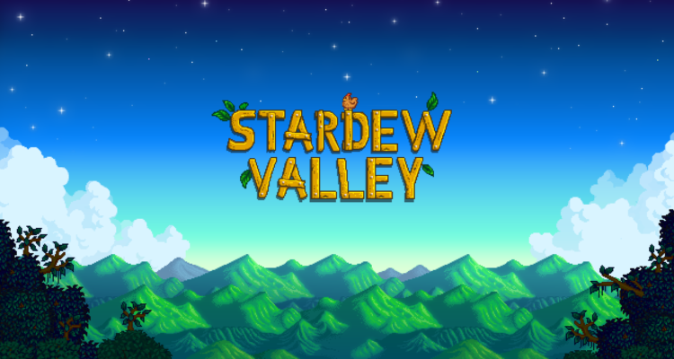

𝑻𝒉𝒆 𝑾𝒐𝒓𝒍𝒅 𝒐𝒇 𝑺𝒕𝒂𝒓𝒅𝒆𝒘 𝑽𝒂𝒍𝒍𝒆𝒚

𝚃𝚑𝚒𝚜 𝚠𝚎𝚋𝚙𝚊𝚐𝚎 𝚒𝚜 𝚋𝚊𝚜𝚎𝚍 𝚞𝚙𝚘𝚗 𝚝𝚑𝚎 𝚐𝚊𝚖𝚎 𝚂𝚝𝚊𝚛𝚍𝚎𝚠 𝚅𝚊𝚕𝚕𝚎𝚢. 𝙾𝚗 𝚝𝚑𝚎𝚜𝚎 𝚠𝚎𝚋 𝚙𝚊𝚐𝚎𝚜, 𝚢𝚘𝚞’𝚕𝚕 𝚏𝚒𝚗𝚍 𝚒𝚗𝚏𝚘𝚛𝚖𝚊𝚝𝚒𝚘𝚗 𝚊𝚕𝚕 𝚊𝚋𝚘𝚞𝚝 𝚜𝚘𝚖𝚎 𝚘𝚏 𝚖𝚢 𝚏𝚊𝚟𝚘𝚛𝚒𝚝𝚎 𝚝𝚑𝚒𝚗𝚐𝚜 𝚒𝚗 𝚝𝚑𝚎 𝚐𝚊𝚖𝚎; 𝚝𝚑𝚎 𝚌𝚑𝚊𝚛𝚊𝚌𝚝𝚎𝚛𝚜 𝚊𝚗𝚍 𝚝𝚑𝚎 𝚊𝚗𝚒𝚖𝚊𝚕𝚜.
𝑨𝒃𝒐𝒖𝒕 𝑺𝒕𝒂𝒓𝒅𝒆𝒘 𝑽𝒂𝒍𝒍𝒆𝒚
𝚂𝚝𝚊𝚛𝚍𝚎𝚠 𝚅𝚊𝚕𝚕𝚎𝚢 𝚒𝚜 𝚊 𝚜𝚒𝚖𝚞𝚕𝚊𝚝𝚒𝚘𝚗 𝚐𝚊𝚖𝚎 𝚌𝚎𝚗𝚝𝚎𝚛𝚎𝚍 𝚊𝚛𝚘𝚞𝚗𝚍 𝚏𝚊𝚛𝚖𝚒𝚗𝚐, 𝚛𝚎𝚕𝚊𝚝𝚒𝚘𝚗𝚜𝚑𝚒𝚙𝚜 𝚊𝚗𝚍 𝚝𝚑𝚎 𝚌𝚊𝚝𝚑𝚊𝚛𝚝𝚒𝚌 𝚛𝚎𝚗𝚎𝚠𝚊𝚕 𝚘𝚏 𝚊 𝚏𝚛𝚎𝚜𝚑 𝚜𝚝𝚊𝚛𝚝 𝚊𝚗𝚍 𝚊 𝚗𝚎𝚠 𝚎𝚗𝚟𝚒𝚛𝚘𝚗𝚖𝚎𝚗𝚝.

Click on the button labelled "Animals" to go to a page about the various
animals in the game.
Click on the button labelled "Characters" to go to a page about the various
characters in the game.